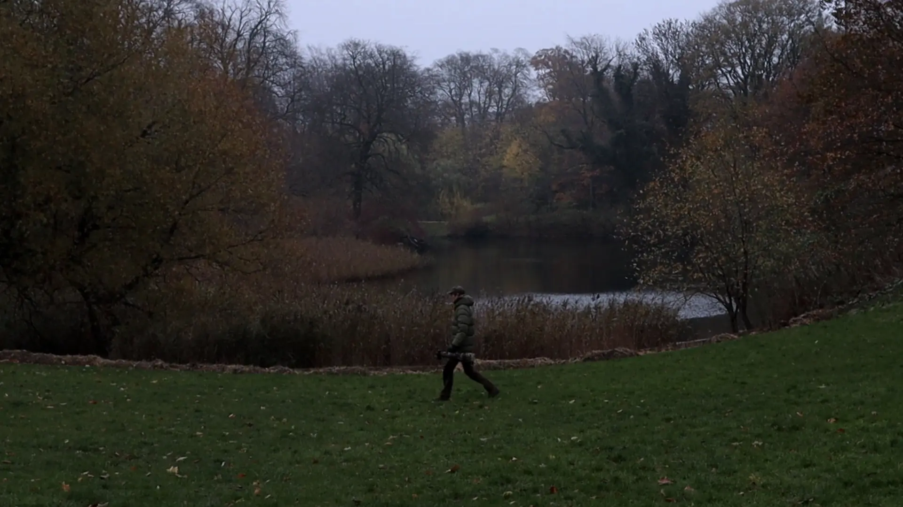

Mads Hagen
Mads Hagen
På lige knap et minut, fortæller Mads Hagen om hans passion som naturfotograf.
Vi følger ham i feldten imens vi hører om hvad der fik Mads igang med fotografi, og hvad det er der gør at han bliver ved med at komme tilbage til den smukke danske natur.
I videoen ser vi blandt andet en fiske hejre og en blishøne. Vi var så heldige at få begge på kamera.
Der ses også nogle blade der blæser i vinden og det bliver vist hvordan Mads går fra sted til sted for at komme rundt. Det er spændene sager du.
